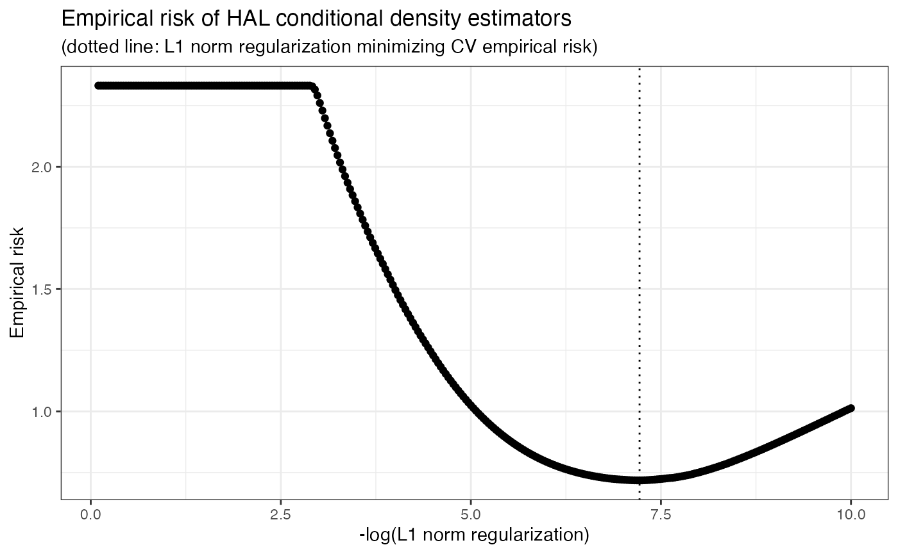

Highly Adaptive Lasso Conditional Density Estimation
Nima Hejazi and David Benkeser
2024-02-20
Source:vignettes/intro_haldensify.Rmd
intro_haldensify.RmdBackground and motivation
In causal inference problems, both classical estimators (e.g.,
inverse probability weighting) and doubly robust estimators (e.g.,
one-step estimation, targeted minimum loss estimation) require
estimation of the propensity score, a nuisance parameter corresponding
to the treatment mechanism. While treatments of interest may often be
continuous-valued, most approaches opt to discretize the treatment so as
to estimate effects based on binary (or categorical) treatment. Such
simplifications are often motivated by convenience rather than science –
to avoid estimation of the generalized propensity score (Hirano and Imbens 2004; Imai and Van Dyk 2004),
the covariate-conditional treatment density. The haldensify
package introduces a flexible approach for estimating such conditional
density functions, using the highly adaptive lasso (HAL), a
nonparametric estimator that has been shown to exhibit desirable
rate-convergence properties.
Consider data generated by typical cohort sampling \(O = (W, A, Y)\), where \(W\) is a vector of baseline covariates, \(A\) is a continuous (or ordinal) treatment, and \(Y\) is an outcome of interest. Estimation of the generalized propensity score \(g_{0,A}\) corresponds to estimating the conditional density of \(A\) given \(W = w\). A simple strategy for estimating this nuisance function is to assume a parametric working model and use parametric regression to generate suitable density estimates. For example, one could operate under the working assumption that \(A\) given \(W\) follows a Gaussian distribution with homoscedastic variance and mean \(\sum_{j=1}^p \beta_j \phi_j(W)\), where \(\phi = (\phi_j : j)\) are user-selected basis functions and \(\beta = (\beta_j : j)\) are unknown regression parameters. In this case, a density estimate would be generated by fitting a linear regression of \(A\) on \(\phi(W)\) to estimate the conditional mean of \(A\) given \(W\), paired with maximum likelihood estimation of the variance of \(A\). Then, the estimated conditional density would be given by the density of a Gaussian distribution evaluated at these estimates. Unfortunately, most such approaches do not allow for flexible modeling of \(g_{0,A}\). This motivated our development of a novel and flexible procedure for constructing conditional density estimators \(g_{n,A}(a \mid w)\) of \(A\) given \(W = w\) (possibly subject to observation-level weights).
Conditional density estimation by pooled hazards regression
As consistent estimation of the generalized propensity score is an integral part of constructing estimators of the causal effects of continuous treatments, our conditional density estimator, built around the HAL regression function, may be quite useful in flexibly constructing such estimates. We note that proposals for the data adaptive estimation of such quantities are sparse in the literature (e.g., Zhu, Coffman, and Ghosh (2015)). Notably, Dı́az and van der Laan (2011) gave a proposal for constructing a semiparametric estimator of such a target quantity based on exploiting the relationship between the hazard and density functions. Our proposal builds upon theirs in several key ways:
- we adjust their algorithm so as to incorporate sample-level weights, necessary for making use of sample-level weights (e.g., inverse probability of censoring weighting); and
- we replace their use of an arbitrary classification model with the HAL regression function.
While our first modification is general and may be applied to the estimation strategy of Dı́az and van der Laan (2011), our latter contribution requires adjusting the penalization aspect of HAL regression so as to respect the use of a loss function appropriate for density estimation on the hazard scale.
To build an estimator of a conditional density, Dı́az and van der Laan (2011) considered discretizing the observed \(a \in A\) based on a number of bins \(T\) and a binning procedure (e.g., including the same number of points in each bin or forcing bins to be of the same length). We note that the choice of the tuning parameter \(T\) corresponds roughly to the choice of bandwidth in classical kernel density estimation; this will be made clear upon further examination of the proposed algorithm. The data \(\{A, W\}\) are reformatted such that the hazard of an observed value \(a \in A\) falling in a given bin may be evaluated via standard classification techniques. In fact, this proposal may be viewed as a re-formulation of the classification problem into a corresponding set of hazard regressions: \[\begin{align*} \mathbb{P} (a \in [\alpha_{t-1}, \alpha_t) \mid W) =& \mathbb{P} (a \in [\alpha_{t-1}, \alpha_t) \mid A \geq \alpha_{t-1}, W) \times \\ & \prod_{j = 1}^{t -1} \{1 - \mathbb{P} (a \in [\alpha_{j-1}, \alpha_j) \mid A \geq \alpha_{j-1}, W) \}, \end{align*}\] where the probability that a value of \(a \in A\) falls in a bin \([\alpha_{t-1}, \alpha_t)\) may be directly estimated from a standard classification model. The likelihood of this model may be re-expressed in terms of the likelihood of a binary variable in a data set expressed through a repeated measures structure. Specifically, this re-formatting procedure is carried out by creating a data set in which any given observation \(A_i\) appears (repeatedly) for as many intervals \([\alpha_{t-1}, \alpha_t)\) that there are prior to the interval to which the observed \(a\) belongs. A new binary outcome variable, indicating \(A_i \in [\alpha_{t-1}, \alpha_t)\), is recorded as part of this new data structure. With the re-formatted data, a pooled hazard regression, spanning the support of \(A\) is then executed. Finally, the conditional density estimator \[\begin{equation*} g_{n, \alpha}(a \mid W) = \frac{\mathbb{P}(a \in [\alpha_{t-1}, \alpha_t) \mid W)}{(\alpha_t - \alpha_{t-1})}, \end{equation*}\] for \(\alpha_{t-1} \leq a \le \alpha_t\), may be constructed. As part of this procedure, the hazard estimates are mapped to density estimates through rescaling of the estimates by the bin size (\(\alpha_t - \alpha_{t-1}\)).
In its original proposal, a key element of this procedure was the use of any arbitrary classification procedure for estimating \(\mathbb{P}(a \in [\alpha_{t-1}, \alpha_t) \mid W)\), facilitating the incorporation of flexible, data adaptive estimators. We alter this proposal in two ways,
- replacing the arbitrary estimator of \(\mathbb{P}(a \in [\alpha_{t-1}, \alpha_t) \mid W)\) with HAL regression, and
- accommodating the use of sample-level weights, making it possible for the resultant conditional density estimator to achieve a convergence rate with respect to a loss-based dissimilarity of \(\approx n^{-1/3}\) under assumptions.
Our procedure alters the HAL regression function to use a loss function tailored for estimation of the hazard, invoking \(\ell_1\)-penalization in a manner consistent with this loss.
Example: Conditional density estimation
First, let’s load a few required packages and set a seed for our example.
library(haldensify)
library(data.table)
library(ggplot2)
set.seed(75681)Next, we’ll generate a simple simulated dataset. The function
make_example_data, defined below, generates a baseline
covariate \(W\) and a continuous
treatment \(A\), whose mean is a
function of \(W\).
make_example_data <- function(n_obs) {
W <- runif(n_obs, -4, 4)
A <- rnorm(n_obs, mean = W, sd = 0.25)
dat <- as.data.table(list(A = A, W = W))
return(dat)
}Now, let’s simulate our data and take a quick look at it:
# number of observations in our simulated dataset
n_obs <- 200
(example_data <- make_example_data(n_obs))## A W
## 1: 2.3063922 2.24687273
## 2: 0.9297479 0.91025531
## 3: -3.2443382 -2.98696024
## 4: -0.1842217 -0.01204378
## 5: 3.2756387 3.59166824
## ---
## 196: 0.4250425 0.43070281
## 197: 1.0606211 1.35836156
## 198: 2.2820014 2.34814939
## 199: -2.9015290 -3.05240270
## 200: -3.2334017 -3.52716556Next, we’ll fit our pooled hazards conditional density estimator via
the haldensify wrapper function. Based on underlying theory
and simulation experiments, we recommend setting a relatively large
number of bins and using a binning strategy that accommodates creating
such a large number of bins.
haldensify_fit <- haldensify(
A = example_data$A,
W = example_data$W,
n_bins = c(5, 10),
grid_type = "equal_range",
lambda_seq = exp(seq(-0.1, -10, length = 300)),
# the following are passed to hal9001::fit_hal() internally
max_degree = 2,
reduce_basis = 1 / sqrt(n_obs)
)Having constructed the conditional density estimator, we can examine
the empirical risk over the grid of choices of the \(L_1\) regularization parameter \(\lambda\). To do this, we can simply call
the available plot method, which uses the cross-validated
conditional density fits in the cv_tuning_results slot of
the haldensify object. For example,
p_risk <- plot(haldensify_fit)
p_risk
Finally, we can predict the conditional density over the grid of
observed values \(A\) across different
elements of the support \(W\). We do
this using the predict method of haldensify
and plot the results below.
# predictions to recover conditional density of A|W
new_a <- seq(-4, 4, by = 0.05)
new_dat <- as.data.table(list(
a = new_a,
w_neg = rep(-2, length(new_a)),
w_zero = rep(0, length(new_a)),
w_pos = rep(2, length(new_a))
))
new_dat[, pred_w_neg := predict(haldensify_fit,
new_A = new_dat$a,
new_W = new_dat$w_neg
)]
new_dat[, pred_w_zero := predict(haldensify_fit,
new_A = new_dat$a,
new_W = new_dat$w_zero
)]
new_dat[, pred_w_pos := predict(haldensify_fit,
new_A = new_dat$a,
new_W = new_dat$w_pos
)]
# visualize results
dens_dat <- melt(new_dat,
id = c("a"),
measure.vars = c("pred_w_pos", "pred_w_zero", "pred_w_neg")
)
p_dens <- ggplot(dens_dat, aes(x = a, y = value, colour = variable)) +
geom_point() +
geom_line() +
stat_function(
fun = dnorm, args = list(mean = -2, sd = 0.25),
colour = "blue", linetype = "dashed"
) +
stat_function(
fun = dnorm, args = list(mean = 0, sd = 0.25),
colour = "darkgreen", linetype = "dashed"
) +
stat_function(
fun = dnorm, args = list(mean = 2, sd = 0.25),
colour = "red", linetype = "dashed"
) +
labs(
x = "Observed value of W",
y = "Estimated conditional density",
title = "Conditional density estimates g(A|W)"
) +
theme_bw() +
theme(legend.position = "none")
p_dens
In the above example, we generate synthetic data along a grid of
\(A\) and three values of \(W\) (\(W \in
\{-2, 0, +2\}\)), representing distinct groups/strata with
respect to the covariate \(W\). Using
this data, we use the trained haldensify model to predict
the density of \(A\), conditional on
the paired value of \(W\), yielding
estimates of the conditional density for each of these three
hypothetical strata of \(W\). The
resultant figure depicts the estimated conditional density as colored
points (blue for \(W = -2\), green for
\(W = 0\), and red for \(W = +2\)), and the theoretical density for
each group as smooth curves (using ggplot2’s
stat_function()). For each group, the differences between
the estimated conditional densities and the theoretical densities can be
taken as indicative of the quality of the haldensify
estimator in this example. Overall, the haldensify
estimator appears to recover the underlying density of \(A\) best for the group \(W = 0\), with slightly degraded performance
for \(W = -2\), which degrades further
for \(W = +2\). The
haldensify conditional density estimator has been used to
estimate the generalized propensity score in applications of the
methodology described in Hejazi et al.
(2020).
Nonparametric inverse probability weighted estimation
As mentioned above, the generalized propensity score is a critical
ingredient in evaluating causal effects for continuous treatments. A
popular framework for defining and evaluating such causal effects is
that of modified treatment policies (Haneuse and
Rotnitzky 2013; Dı́az and van der Laan 2018; Hejazi et al. 2022),
which define interventions that shift (or modify) the treatment. For
example, in a setting with a continuous treatment \(A\), in which we additionally collect
baseline covariates \(W\) and an
outcome measurement \(Y\) (so that the
data on a given unit is \(O = (W, A,
Y)\)), we could consider an intervention that sets the value of
\(A\) via \(d(A,W; \delta) = A + \delta(W)\), for a
user-defined function \(d(A,W;\delta)\)
indexed by a function (or scalar) \(\delta\). This intervention regime is a
simple example of a modified treatment policy (MTP); it can be thought
of mapping the observed \(A\) to a
counterfactual \(A_{\delta}\) that is
itself an additive shift of the natural value of \(A\). The counterfactual mean of such an
intervention would be expressed \(\mathbb{E}[Y(A_{\delta})]\), where \(Y(A_{\delta})\) is the potential outcome
that would be observed had the treatment taken the value \(A_{\delta}\). Both Haneuse and Rotnitzky (2013) and Dı́az and van der Laan (2018) proposed
substitution, inverse probability weighted (IPW), and doubly robust
estimators of a statistical functional \(\psi\) that identifies this counterfactual
mean under standard assumptions. Doubly robust estimators of \(\psi\) are implemented in the
txshift R package (Hejazi and Benkeser 2020, 2022); such
estimation frameworks are usually necessary in order to take advantage
of flexible estimators of nuisance parameters.
Despite the popularity of doubly robust estimation procedures, IPW
estimators can be modified to accommodate data adaptive estimation of
the (generalized) propensity score. Such nonparametric IPW estimators,
based on HAL, have been described by Ertefaie,
Hejazi, and van der Laan (2022) in the context of binary
treatments, and by Hejazi et al. (2022)
for continuous treatments. The IPW estimator of \(\psi\) is \(\psi_{n,\text{IPW}} = \{\tilde{g}_{n,A}(A \mid W)
/ g_{n,A}(A \mid W)\} Y\), where \(g_{n,A}\) is an estimator of the
generalized propensity score (e.g., as produced by
haldensify()) and \(\tilde{g}_{n,A}\) is this quantity
evaluated at the post-intervention value of the treatment \(A_{\delta}\). Usually, \(g_{n,A}\) must be estimated via parametric
modeling strategies in order for \(\psi_{n,\text{IPW}}\) to achieve desirable
asymptotic properties (unbiasedness, efficiency); however, when \(g_{n,A}\) is estimated flexibly, sieve
estimation strategies (undersmoothing) may be used to select an
estimator \(g_{n,A}\), from among an
appropriate class, that allows for optimal estimation of \(\psi\). This issue arises in part because
strategies for optimal selection of \(g_{n,A}\) (e.g., cross-validation) optimize
for estimation of the conditional density, ignoring the fact that it is
only a nuisance parameter in the process of IPW estimation. When
haldensify() is used for this purpose, a family of
conditional density estimators \(g_{n,A,\lambda}\), indexed by the \(\ell_1\) regularization term \(\lambda\), are generated, with
cross-validation used to select an optimal estimator from among this
trajectory in \(\lambda\). We saw this
above when we visualized the empirical risk profile of \(g_{n,A}\). While empirical risk
minimization based on the framework of cross-validated loss-based
estimation is appropriate for optimally estimating the generalized
propensity score, the selected estimator will fail to yield an IPW
estimator with desirable asymptotic properties; undersmoothing must be
used to select a more appropriate estimator. The haldensify
package implements nonparametric IPW estimators that incorporate
undersmoothing in the ipw_shift() function, the use of
which we demonstrate below.
Example: Nonparametric IPW estimation
To begin, we set up a new data-generating process and simulate data for \(n = 200\) units from it. We will aim to estimate the counterfactual mean of \(Y\) under an MTP that shifts \(A\) by \(\delta = 2\).
# set up data-generating process
make_example_data <- function(n_obs) {
W <- runif(n_obs, 1, 4)
A <- rpois(n_obs, 2 * W + 1)
Y <- rbinom(n_obs, 1, plogis(2 - A + W + 3))
dat <- as.data.table(list(Y = Y, A = A, W = W))
return(dat)
}
# generate data and take a look
(dat_obs <- make_example_data(n_obs = 200))## Y A W
## 1: 0 11 3.667215
## 2: 1 6 2.251591
## 3: 1 4 3.225307
## 4: 0 8 3.691397
## 5: 0 12 3.940483
## ---
## 196: 1 7 2.838968
## 197: 1 5 2.603019
## 198: 1 6 3.781795
## 199: 1 2 3.267789
## 200: 0 10 3.736476With this dataset, we can now simply call the
ipw_shift() function, providing arguments that specify the
causal effect of interest (delta = 2) and tuning parameters
for estimating the generalized propensity score
(lambda_seq, cv_folds, n_bins).
The selector_type argument specifies the type of
undersmoothing to be used to select an appropriate IPW estimator (from
among a sequence in \(\lambda\));
setting the option selector_type = "all" simply returns IPW
estimators for each of the selectors implemented. For a formal
description of the selectors and numerical experiments examining their
performance, see Hejazi et al. (2022).
est_ipw <- ipw_shift(
W = dat_obs$W, A = dat_obs$A, Y = dat_obs$Y,
delta = 2,
cv_folds = 2L,
n_bins = 5L,
bin_type = "equal_range",
selector_type = "all",
lambda_seq = exp(seq(-1, -10, length = 500L)),
# arguments passed to hal9001::fit_hal()
max_degree = 2,
reduce_basis = 1 / sqrt(n_obs)
)
confint(est_ipw)## # A tibble: 6 × 8
## lwr_ci psi upr_ci se_est type l1_norm lambda_idx gn_nbins
## <dbl> <dbl> <dbl> <dbl> <chr> <dbl> <dbl> <int>
## 1 0.501 0.585 0.664 0.0421 gcv 8.74 235 5
## 2 0.501 0.585 0.664 0.0421 dcar_tol 8.74 235 5
## 3 0.500 0.583 0.662 0.0416 dcar_min 68.2 331 5
## 4 0.501 0.585 0.665 0.0421 lepski_plateau 9.34 243 5
## 5 0.501 0.585 0.665 0.0422 smooth_plateau 10.1 250 5
## 6 0.501 0.585 0.665 0.0422 hybrid_plateau 10.1 250 5The confint() method used above simply creates
confidence intervals (95%, by default) for each of the IPW estimates
returned. Examining the output, we can see that the IPW estimator based
on cross-validation ("gcv") differs from that based on
minimization of an important criterion from semiparametric efficiency
theory ("dcar_min"). These estimators have different
asymptotic properties, with the latter guaranteed to solve an estimating
function required for the characterization of asymptotically efficient
estimators.
References
txshift: Efficient Estimation
of the Causal Effects of Stochastic Interventions. https://doi.org/10.5281/zenodo.4070042.